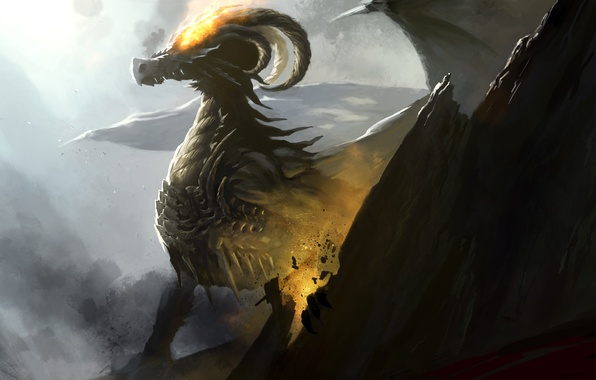
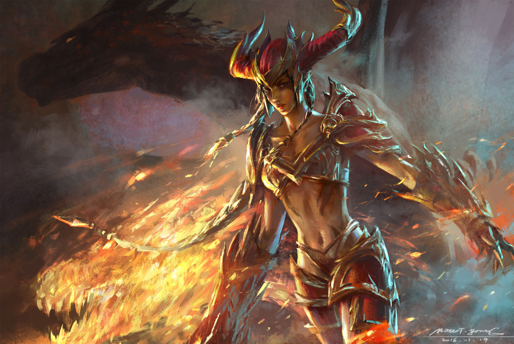

Говорят, на свете живет дракон, говорят, страшней его не найти, мол, он враг человеческий испокон, искушает людей, сбивает с пути. Говорят, что кожа его - гранит, говорят, в глаза ему не смотри - мол, завертит, закрутит, заворожит, заморозит каждого изнутри.


У дракона шкура темна, сера, а еще он быстрее любой змеи. Пролетают мимо века, ветра, он - почти скалою во тьме стоит.
Есть принцесса, дворец ее далеко, косы рыжие, порванные штаны. Она знает, что где-то живет дракон (выдох пламенный, зубищи жестяны). Королеве нужен хороший зять, и король на дочку опять сердит, но принцесса мечтает однажды взять и дракона
самостоятельно победить.


Горизонт серебрян, необозрим, поднимаются горы в неровный ряд.
То ли это мы легенды творим,
то ли это легенды тебя творят.
Песня сложится за твоей спиной, золотое солнце войдет в зенит, и принцесса едет на смертный бой, и копье о щит жестяной звенит. И влетает, как рыжая стрекоза (правда, что ль, он пламя рождает ртом?)...
Но они замирают глаза в глаза,
и становится сказка вдруг не о том.
Всех, кто сегодня счастлив - боже благослови,
где-то в душе рассказчика мерзко скребутся черти.
Понимаешь. Любая сказка - она всегда о любви,
даже если кажется, что о смерти.

Просто законы - справедливы, хотя и злы.
Тот, кто горяч - никогда не сможет согреться.
Это неправда, что драконы умирают от старости или стрелы.
Они умирают от любви,
что не помещается в сердце.
Входит ночь во дворец, темноглаза, тепла, боса,
затихают шаги, умолкают все голоса,
и в свои покои идет королева,
и никто не хочет попадаться ей на глаза.


Да, она не любит празднества и балы.
Молчалива, спокойна. Идет. Прямее стрелы.
Ее косы рыжи и руки ее теплы.
Говорят, что она смотрела в глаза дракону
и осталась жива, величайшей из дев прослыв.
Может, кто-то еще б добавил чего, но кто же будет так глуп?
Королева раздевается у зеркала и всматривается вглубь.
И отчетливо видит, как белая кожа становится чешуей,
такой, что не пробьет ни одно копье,
как в чертах лица проступает - уже не вполне свое.
Как становится неуязвимым и нелюдским - потому что любивший дракона сам становится им.

И она сползает по стенке, нищим завидуя и калекам,
шепчет: "Господи боже,
как я устала быть человеком".